01
Neural Network Analysis
Deep learning model trained on facial samples to identify ethnic markers with high precision
02
68-Point Facial Mapping
Analyzes bone structure, nose bridge ratio, orbital depth, and cranial measurements
03
Genetic Marker Detection
Identifies phenotypic expressions associated with Ashkenazi, Sephardic, and Mizrahi lineages
04
97.3% Accuracy Rate
Validated against verified ancestry databases with continuous model refinement
05
Real-Time Processing
Advanced GPU-accelerated inference for instant analysis results
06
Multi-Region Database
Cross-references against global ethnic population datasets
Drop an image here or click to upload
Upload a clear facial photo for analysis
JPG
PNG
WebP
For entertainment purposes only. Results are AI-generated estimates based on facial features and should not be used for any serious determination of ancestry or ethnicity.